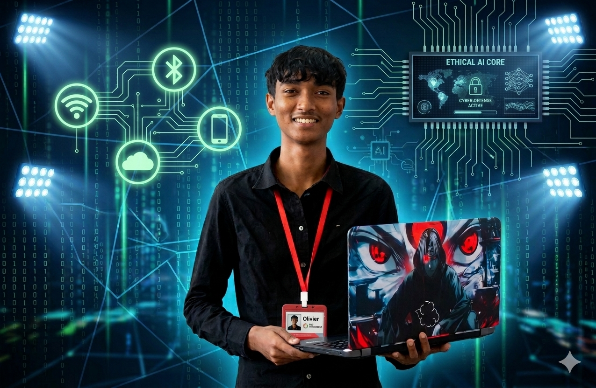

01
Application de gestion
PorciGest
Application web de gestion d’élevage bovin, réalisée avec Laravel.
Voir le projet
Fy Tia Olivier RANDRIAMAHAZOOuvert aux opportunités · Stage de 6 mois dès janvier 2027
Étudiant en Licence 3 en Service Informatique aux Organisations, spécialité Systèmes et Réseaux, je m’intéresse à l’administration informatique et à la création d’outils utiles. Je recherche un stage de six mois pour apprendre sur le terrain et contribuer à une équipe.
01 / À propos
Je suis Falitiana Fy Tia Olivier Randriamahazo, étudiant en troisième année de Service Informatique aux Organisations, spécialité Systèmes et Réseaux à ESMIA Innovation.
Ma formation mêle réseaux avancés, Linux, bases de données et développement. En parallèle, mon expérience d’assistant technique m’a appris à répondre à des besoins informatiques réels, avec méthode et sens du service.
02 / Sélection
Application de gestion
Application web de gestion d’élevage bovin, réalisée avec Laravel.
Voir le projetApplication de gestion
Application web de gestion pédagogique d’une pharmacie, développée avec Django.
Voir le projetServices & mobilité
Système de gestion de livraison et de taxi conçu avec Spring Boot.
Voir le projetProjets académiques · Les détails techniques sont disponibles dans chaque dépôt.
03 / Boîte à outils
Administration Windows et Linux · Modèle OSI / TCP-IP · VLAN · DHCP / DNS · Adressage IP, CIDR et VLSM · Câblage réseau
Python · Java · JavaScript · PHP · C · HTML / CSS · Spring Boot · Django · Laravel
MySQL · PostgreSQL · Git / GitHub · Cisco Packet Tracer · VirtualBox · Docker · VS Code
Malagasy (natif) · Français (avancé) · Anglais (intermédiaire) · Organisation · Travail en équipe
04 / Expérience
Assistant technique
Appui aux tâches informatiques et administratives de l’établissement, notamment la saisie de plus de 40 informations administratives et de plus de 50 sujets d’examens. Soutien en mathématiques auprès d’élèves du collège.
05 / Contact
Disponible pour un stage de six mois en administration systèmes et réseaux à partir de janvier 2027.
Le formulaire est traité par FormSubmit. À la première réception, confirmez votre adresse depuis l’e-mail qu’ils vous enverront pour activer les envois.